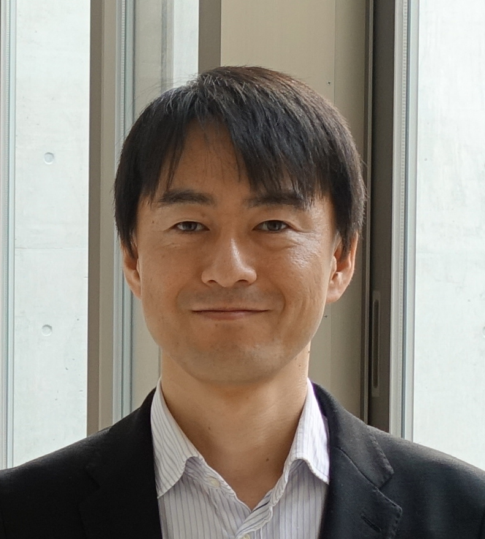

Keynote Speakers
Hardware Security: Research Field Expanding in IoT Era
Naofumi Homma, Research Center for Electrical Communication, Tohoku University
26 November, Room 1, 9:20-10:20

Abstract
Hardware security in mobile and embedded systems is drawing much attention in the context of the rapid growth of Internet-of-Things. Due to the easier accessibility, security threats and vulnerabilities for "things" located everywhere are more critical in comparison with PCs and servers in a room. In particular, the threats of side-channel attacks are non-trivial because they can be done by relatively low-cost equipment in a non-destructive manner. This talk will start with an overview of researches on hardware security, and then introduce the-state-of-the-art side-channel attacks and countermeasures.
Biography
Naofumi Homma received the PhD degrees in information sciences from Tohoku University, Sendai, Japan, in 2001. Since 2016, he has been a Professor in the Research Institute of Electrical Communication, Tohoku University. In 2009-2010 and 2016-2017, he was a visiting professor at Telecom ParisTech in Paris, France. His research interests include computer arithmetic, VLSI design methodology, and hardware security. He received a number of awards including the Best Symposium Paper Award at the 2013 IEEE International Symposium on Electromagnetic Compatibility (EMC 2013), the Best Paper Award at the 2014 IACR International Conference on Cryptographic Hardware and Embedded Systems (CHES 2014), the JSPS Prize in 2018, and German Innovation Award in 2018. He served as a Program Co-Chair of 2017 IACR International Conference on Cryptographic Hardware and Embedded Systems (CHES 2017).
Recent Advances in Visual Sensor Systems
Ivan Lee, University of South Australia
27 November, Room 1, 9:00-10:00
Abstract
The rapid development in smart sensor technologies has major impact across most industries, with rich information
collected to assist information management and decision making. Among these, visual sensors acquire rich media data
from natural and built environments, which plays crucial role in smart Internet of Things. While visual sensors promise
improved services in manufacturing, health, surveillance, monitoring, and vehicular industries, techniques in acquisition,
processing, and analysis remain on-going challenges. This keynote address will cover the evolution of visual sensor
development in the recent past, and showcase various applications facilitated by visual sensors. Present challenges of
visual sensor applications will be presented, and future research directions will be discussed.
Biography
Ivan Lee received the B.Eng., M.Com., MER, and Ph.D. degrees from The University of Sydney. He was a software
development engineer at Cisco Systems, a software engineer at Remotek Corporation, and an Assistant Professor at
Ryerson University. Since 2008, he has been a Senior Lecturer with the University of South Australia. He has served
as the Program Co-Chair of the 2008 ACM International Conference on Image and Video Retrieval (CIVR), the General
Chair of 2013 Australasian Computer Science Week (ACSW), and the General Co-Chair of 2015 International Conference
on Intelligent Information Hiding and Multimedia Signal Processing (IIH-MSP). He was a recipient of the Lockheed
Martin Best Paper Award of 2015 SPIE Defense + Security, Automatic Target Recognition XXV, and the Best Paper Award
of 2007 Pacific-Rim Conference on Multimedia. His research findings have been disseminated in over 100 peer-reviewed
publications, including IEEE Transactions on Image Processing, IEEE Transactions on Multimedia, IEEE Transactions on
Circuits and Systems for Video Technology, IEEE Transactions on Emerging Topics in Computing, IEEE Transactions on
Industrial Informatics, and Advanced Functional Materials. His research interests include smart sensors, multimedia
systems, and scholarly data analytics.